Bayesian Analysis with Multiple Predictors

Why Linear Regression: A Simple Statistical Golem
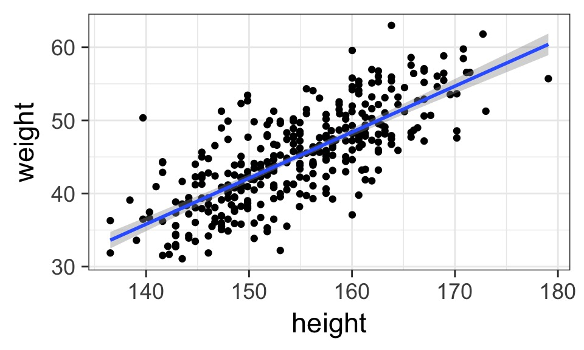
- Describes association between predictor and response
- Response is additive combination of predictor(s)
- Constant variance
Why should we be wary of linear regression?
- Approximate
- Not mechanistic
- Often deployed without thought
- But, often very accurate
Waffle House: Does it Lead to Perdition?
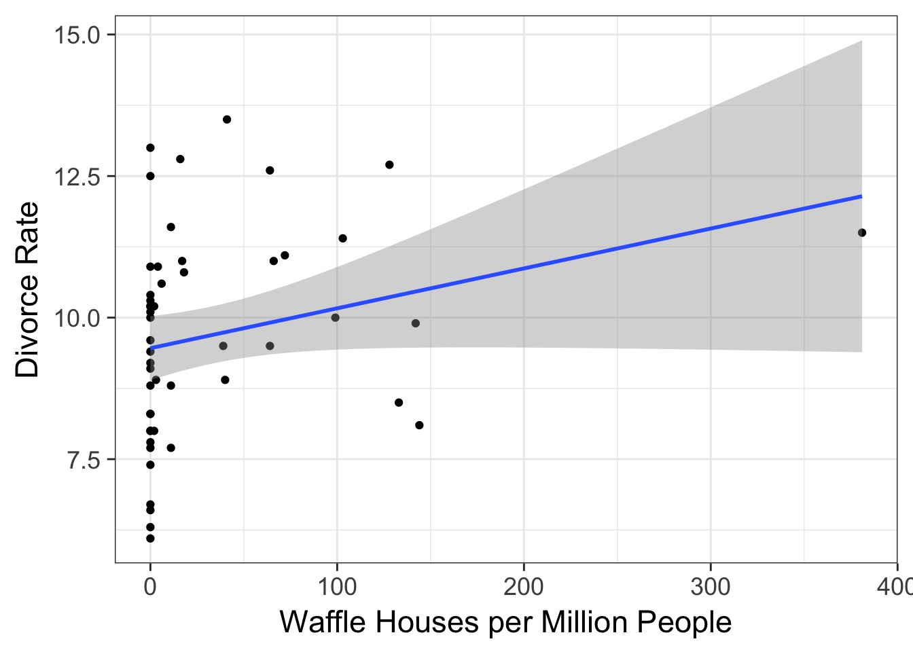
So many possibilities
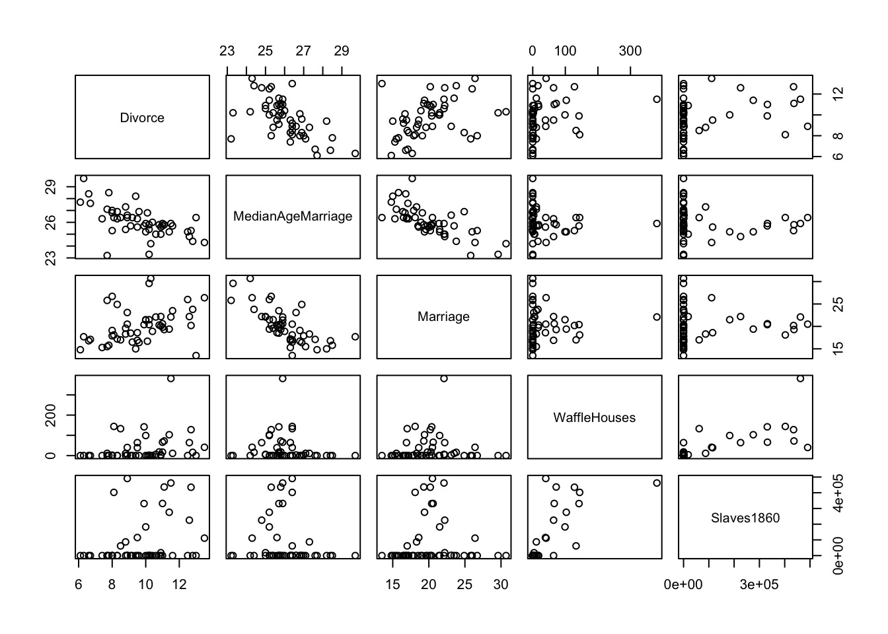
Today’s Outline
- Multiple Predictors in a Bayesian Framework
- How multiple predictors tease apart spurious and masked relationships
- How multiple predictors tease apart spurious and masked relationships
- Evaluating a Model with Multiple Predictors
- Problems With Too Many Predictors
- Categorical Variables
Why use multiple predictors
- Controlling for confounds
- Disentangle spurious relationships
- Reveal masked relationships
- Dealing with multiple causation
- Interactions (soon)
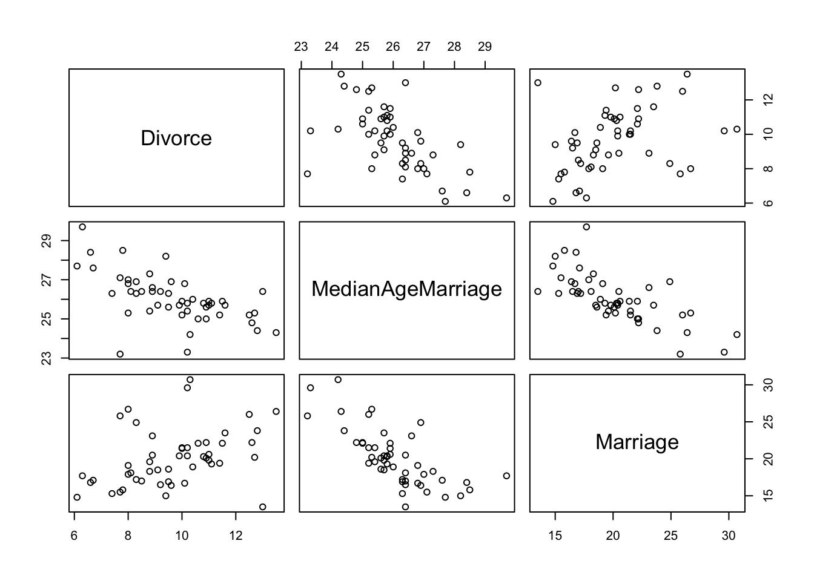
Why NOT use multiple predictors
- Multicollinearity
- Overfitting
- Loss of precision in estimates
- Interpretability
How to Build a Model with Multiple Predictors
Likelihood:
\(h_i \sim Normal(\mu_i, \sigma)\)
Data Generating Process
\(\mu_i = \alpha + \beta_1 x1_i + \beta_2 x2_i + ...\)
Prior:
\(\alpha \sim Normal(0, 100)\)
\(\beta_j \sim Normal(0, 100)\)
\(\sigma \sim U(0,50)\)
Our Data
Let’s start with standardization
WaffleDivorce <- WaffleDivorce %>%
#using scale to center and divide by SD
mutate(Marriage.s = (Marriage-mean(Marriage))/sd(Marriage),
MedianAgeMarriage.s = as.vector(scale(MedianAgeMarriage)))Can we Trust This?

Can we Trust This?
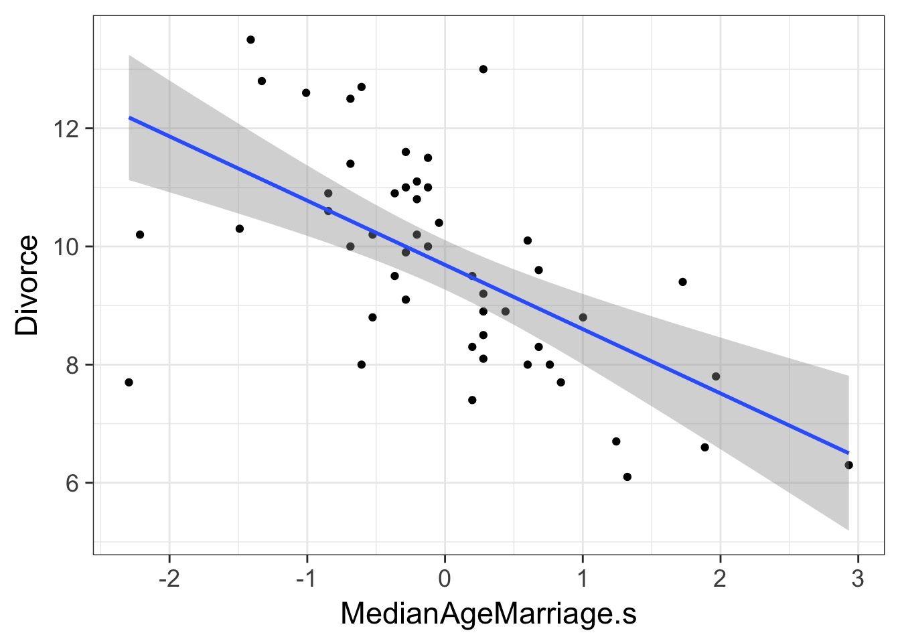
If these are correlated, which is the driver?
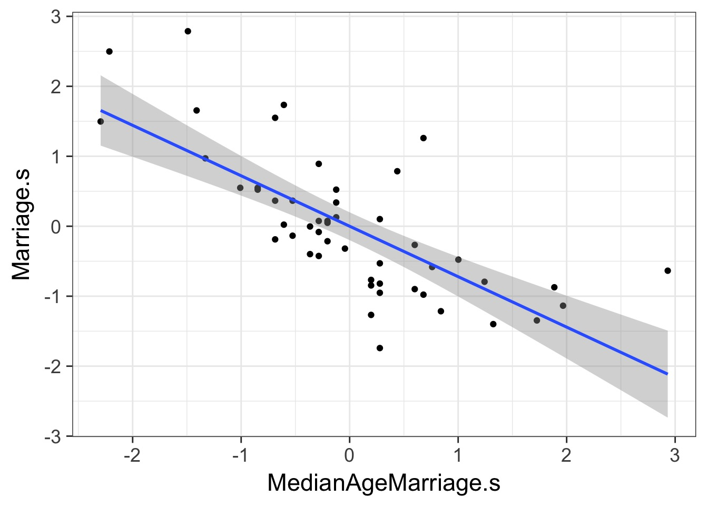
What does a Multiple Regression Coefficient Mean?
- What is the predictive value of one variable once all others have been accounted for?
- We want a coefficient that explains the unique contribution of a predictor
- What is the effect of x1 on y after we take out the effect of x2 on x1?
Our Model
Likelihood:
\(D_i \sim Normal(\mu_i, \sigma)\)
Data Generating Process
\(\mu_i = \alpha + \beta_R R_i + \beta_A A_i\)
Prior:
\(\alpha \sim Normal(10, 10)\) Guess from data
\(\beta_R \sim Normal(0, 1)\) Because standardized
\(\beta_A \sim Normal(0, 1)\) Because standardized
\(\sigma \sim U(0,10)\) Guess from data
Our Model
mod <- alist(
#likelihood
Divorce ~ dnorm(mu, sigma),
#data generating process
mu <- a + bR*Marriage.s + bA * MedianAgeMarriage.s,
# Priors
a ~ dnorm(10,10),
bR ~ dnorm(0,1),
bA ~ dnorm(0,1),
sigma ~ dunif(0,10)
)
fit <- map(mod, data=WaffleDivorce)Results: We Only Need Median Age
Mean StdDev 5.5% 94.5%
a 9.69 0.20 9.36 10.01
bR -0.13 0.28 -0.58 0.31
bA -1.13 0.28 -1.58 -0.69
sigma 1.44 0.14 1.21 1.67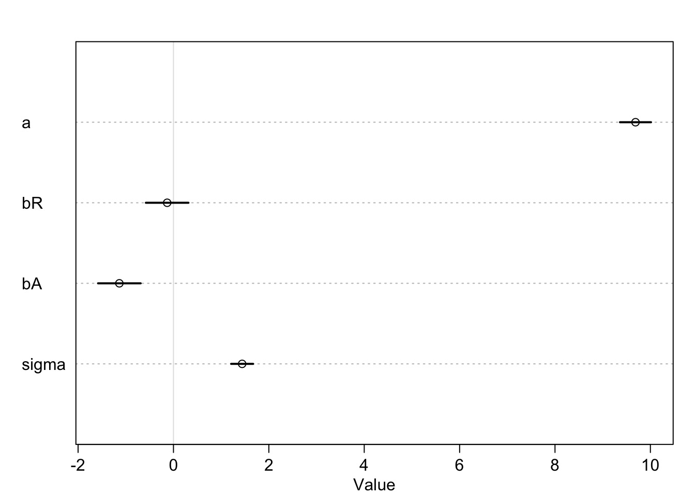
Today’s Outline
- Multiple Predictors in a Bayesian Framework
- How multiple predictors tease apart spurious and masked relationships
- How multiple predictors tease apart spurious and masked relationships
- Evaluating a Model with Multiple Predictors
- Problems With Too Many Predictors
- Categorical Variables
How to Understand Posteriors
pairs(fit)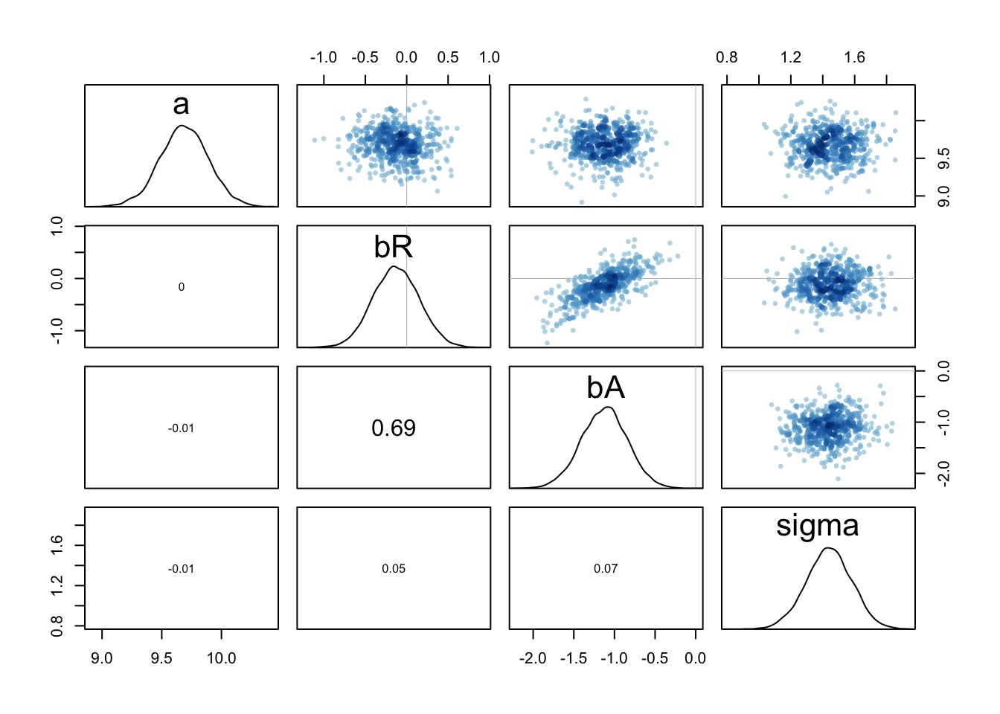
How to Understand Posteriors
- Predictor-residual plots
- What if you remove the effect of other predictors?
- What if you remove the effect of other predictors?
- Counterfactual plots
- What if something else had happened?
- What if something else had happened?
- Posterior Predictions
- How close are model predictions to the data
Predictor-Residual Plots
- The
cr.plotsfrom thecarpackage- Component-residual
- Component-residual
- Take the residual of a predictor, assess it’s predictive power
Steps to Make Predictor-Residual Plots
- Compute predictor 1 ~ all other predictors
- Take residual of predictor 1
- Regress predictor 1 on response
PR Model Part 1
m_mod <- alist(
#model
Marriage.s ~ dnorm(mu, sigma),
mu <- a + b*MedianAgeMarriage.s,
#priors
a ~ dnorm(0,10),
b ~ dnorm(0,10),
sigma ~ dunif(0,10))
m_fit <- map(m_mod, data=WaffleDivorce)PR Model Part 2
WaffleDivorce <- WaffleDivorce %>%
mutate(Marriage_resid = Marriage.s -
(coef(m_fit)[1] + coef(m_fit)[2]*MedianAgeMarriage.s)
)The Predictor-Residual Plot
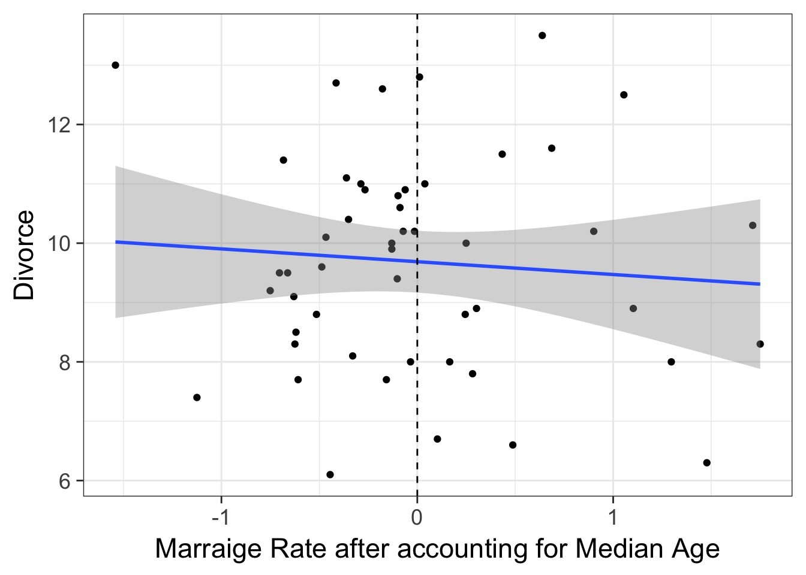
Counterfactual Plots
- Counterfactual: A conditional statement of “if this, then …”
- Powerful way of assessing models - “If we had seen Marraige Rate as x, then the effect of Median age on divorce rate would be…”
- Shows model implied predictions, often at levels nor observed
Counterfactual Plots: Code
cf_data <- crossing(Marriage.s = -2:2,
MedianAgeMarriage.s = seq(-2,2,length.out=300))
#get the data
cf_mu <- link(fit, data = cf_data, refresh=0)
cf_pred <- sim(fit, data=cf_data, refresh=0)
#Get the mean trend
cf_data$Divorce = apply(cf_mu, 2, median)
#get the intervals
cf_mu_pi <- apply(cf_mu, 2, HPDI)
cf_pred_pi <-apply(cf_pred, 2, HPDI)
#add back to the data
cf_data <- cf_data %>%
mutate(mu_lwr = cf_mu_pi[1,], mu_upr = cf_mu_pi[2,],
pred_lwr = cf_pred_pi[1,], pred_upr = cf_pred_pi[2,])What do we learn about the effects of Median Marriage Age?
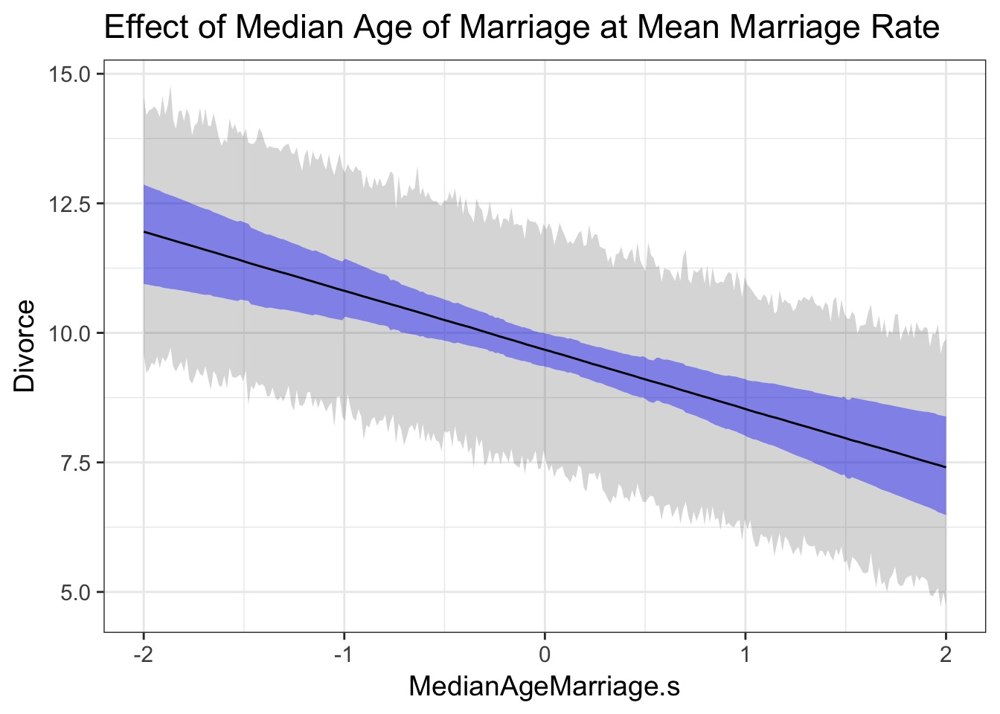
What do we learn about the effects of Median Age and Marriage Rate?
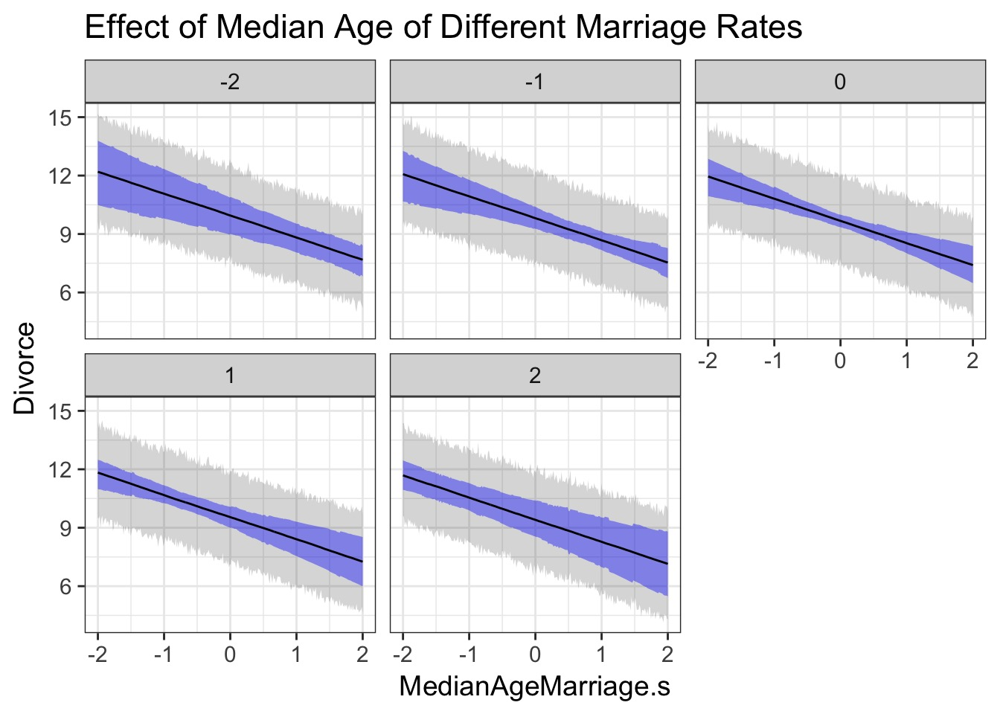
Posterior Prediction: Assessing Fit
- Good ole’ Observed v. Residual, but now with moar error!
- Residuals by groups
- Residuals by other candidate predictors
Getting Residuals
mu <- link(fit, refresh=0)
#Get residual info
WaffleDivorce <- WaffleDivorce %>%
mutate(Divorce_mu = apply(mu, 2, mean),
Divorce_mu_lwr = apply(mu, 2, HPDI)[1,],
Divorce_mu_upr = apply(mu, 2, HPDI)[2,],
#residuals
Divorce_res = Divorce - Divorce_mu,
Divorce_res_lwr = Divorce - Divorce_mu_lwr,
Divorce_res_upr = Divorce - Divorce_mu_upr)What do we learn here?
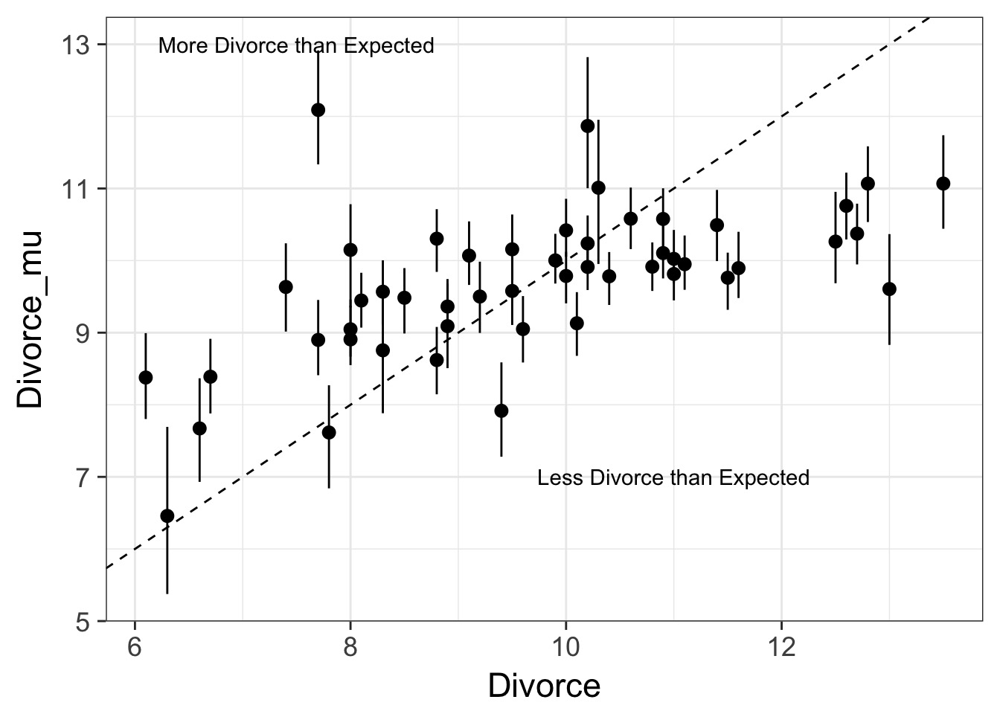
Posterior Prediction: Where did things go wrong?
postcheck to see estimate, data, & fit and prediction error 
Other Predictors?
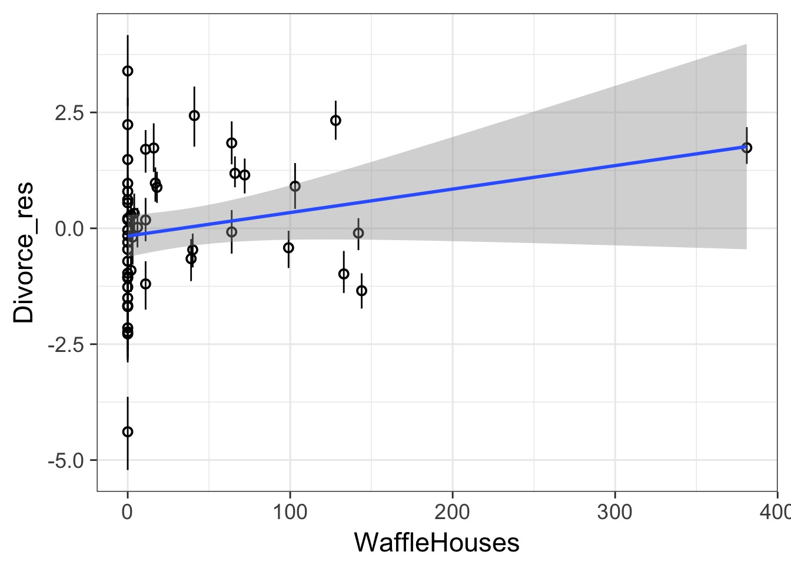
Today’s Outline
- Multiple Predictors in a Bayesian Framework
- How multiple predictors tease apart spurious and masked relationships
- How multiple predictors tease apart spurious and masked relationships
- Evaluating a Model with Multiple Predictors
- Problems With Too Many Predictors
- Categorical Variables
Why not add everything?
alist(
Divorce ~ dnorm( mu , sigma ),
mu <- Intercept +
b_MedianAgeMarriage_s*MedianAgeMarriage_s +
b_Marriage_s*Marriage_s +
b_South*South +
b_Population*Population,
Intercept ~ dnorm(0,10),
b_MedianAgeMarriage_s ~ dnorm(0,10),
b_Marriage_s ~ dnorm(0,10),
b_South ~ dnorm(0,10),
b_Population ~ dnorm(0,10),
sigma ~ dcauchy(0,2)
)- Loss of precision
- Multicollinearity
- Loss of Interpretability
- Overfitting
Loss of precision
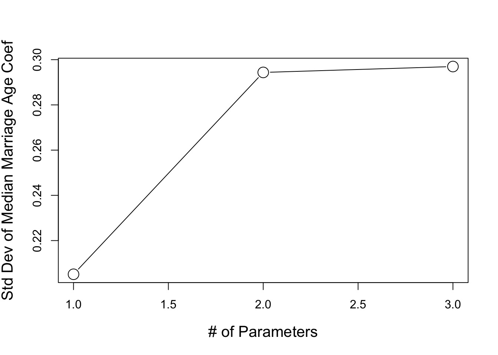
Bias-Variance Tradeoff
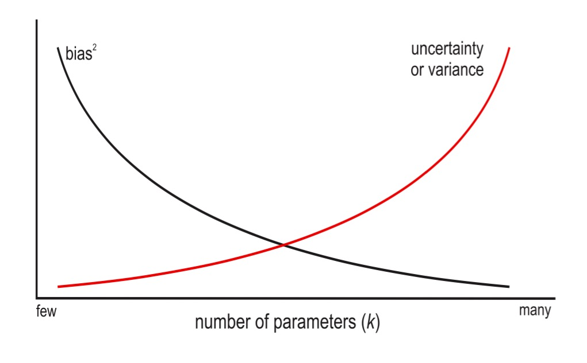
Multicollinearity and Crabs
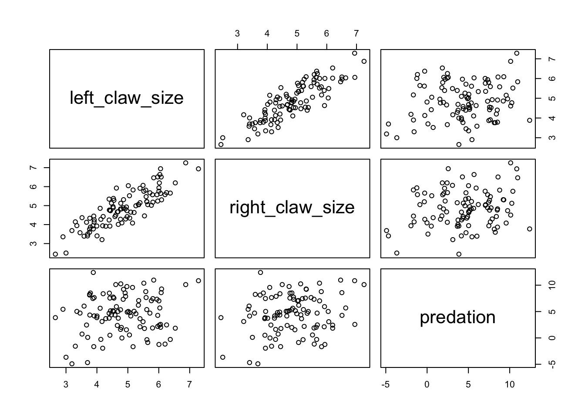 TreasureCoast.com
What did coefficeints for each claw size mean?
Do Crabs really not have an effect?
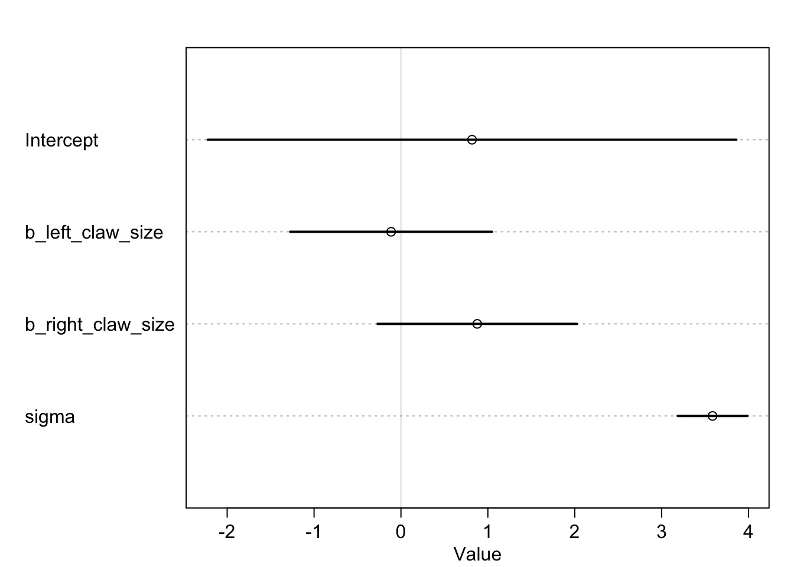
The Problem of Correlated Coefficients
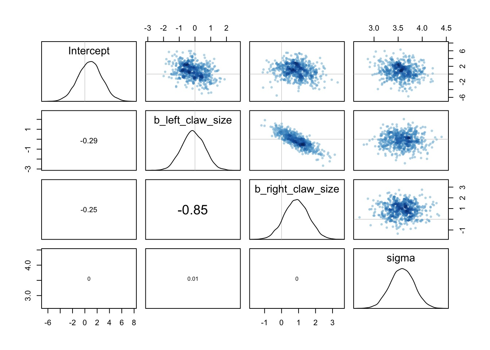
The Information is there if you sum claw effects
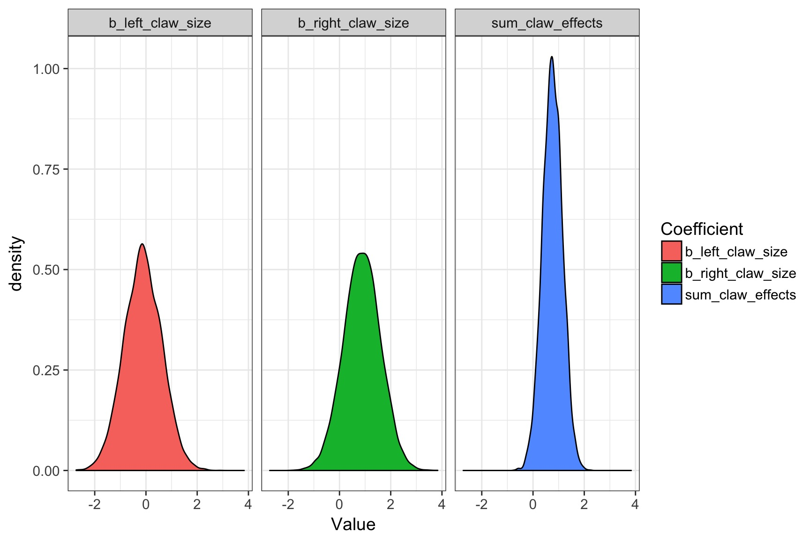
Today’s Outline
- Multiple Predictors in a Bayesian Framework
- How multiple predictors tease apart spurious and masked relationships
- How multiple predictors tease apart spurious and masked relationships
- Evaluating a Model with Multiple Predictors
- Problems With Too Many Predictors
- Categorical Variables
Categorical Variables
- Lots of ways to write models with categorical variables
- We all hate R’s treatment contrasts
- Two main ways to write a model
Categorical Model Construction
- Code each level as 1 or 0 if present/absent
- Need to have one baseline level
- Treatment contrasts!
predation <- a + b * is_crab
- Need to have one baseline level
2. Index your categories
- Need to convert factors to levels with as.numeric()
- predaion <- a[species]
Monkies and Milk

Monkies and Milk Production
data(milk)
head(milk) clade species kcal.per.g perc.fat perc.protein
1 Strepsirrhine Eulemur fulvus 0.49 16.60 15.42
2 Strepsirrhine E macaco 0.51 19.27 16.91
3 Strepsirrhine E mongoz 0.46 14.11 16.85
4 Strepsirrhine E rubriventer 0.48 14.91 13.18
5 Strepsirrhine Lemur catta 0.60 27.28 19.50
6 New World Monkey Alouatta seniculus 0.47 21.22 23.58
perc.lactose mass neocortex.perc
1 67.98 1.95 55.16
2 63.82 2.09 NA
3 69.04 2.51 NA
4 71.91 1.62 NA
5 53.22 2.19 NA
6 55.20 5.25 64.54To easily make Variables
mmat <- model.matrix.default(mass ~ clade, data=milk)
colnames(mmat) <- c("Ape", "New_World_Monkey", "Old_World_Monkey", "Strepsirrhine")
milk <- cbind(milk, mmat)
head(mmat) Ape New_World_Monkey Old_World_Monkey Strepsirrhine
1 1 0 0 1
2 1 0 0 1
3 1 0 0 1
4 1 0 0 1
5 1 0 0 1
6 1 1 0 0Original Milk Model
milk_mod_1 <- alist(
kcal.per.g ~ dnorm(mu, sigma),
mu <- a*Ape + b1*New_World_Monkey +
b2*Old_World_Monkey + b3*Strepsirrhine,
a ~ dnorm(0.6, 10),
b1 ~ dnorm(0,1),
b2 ~ dnorm(0,1),
b3 ~ dnorm(0,1),
sigma ~ dunif(0,10)
)
milk_fit_1 <- map(milk_mod_1, data=milk)Milk Coefs: What does a and b mean?
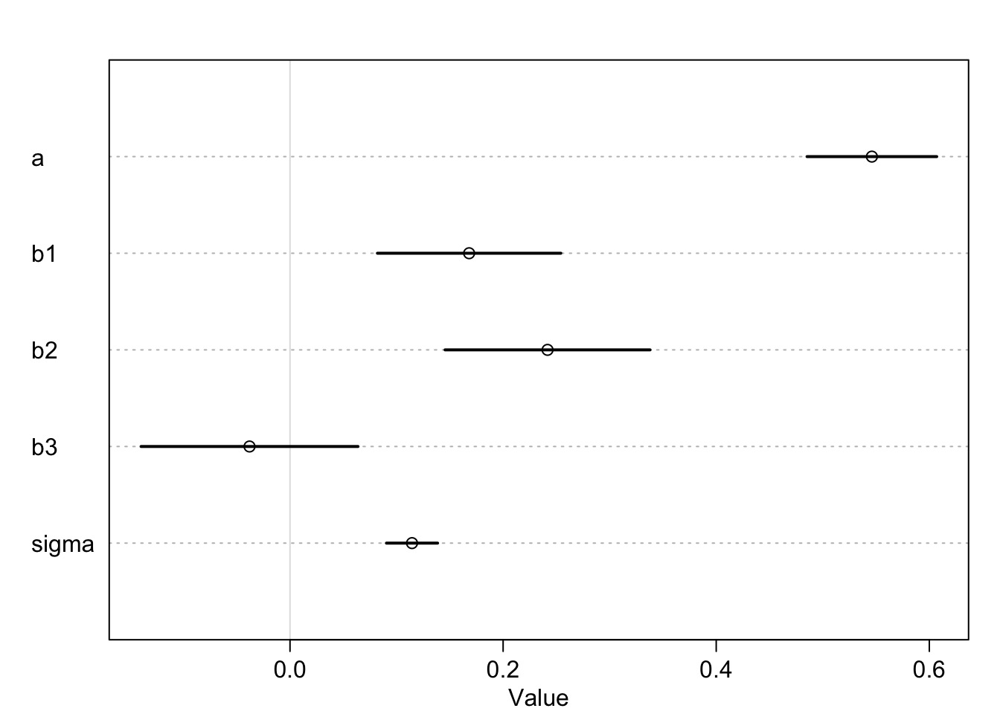
To get the New World mean…
samp_milk <- extract.samples(milk_fit_1)
new_world <- samp_milk$a + samp_milk$b1
#Deviation from Ape
HPDI(samp_milk$b1) |0.89 0.89|
0.08590751 0.25427773 #New World Monkies
HPDI(new_world) |0.89 0.89|
0.6522314 0.7725283 A Better Way
milk$clade_idx <- as.numeric(milk$clade)
#A new model
milk_mod_2 <- alist(
kcal.per.g ~ dnorm(mu, sigma),
#note the indexing!
mu <- a[clade_idx],
#four priors with one line!
a[clade_idx] ~ dnorm(0.6, 10),
sigma ~ dunif(0,10)
)
milk_fit_2 <- map(milk_mod_2, data=milk)Compare Results
#New World Monkies
#From Mod1
HPDI(new_world) |0.89 0.89|
0.6522314 0.7725283 #From Mod2 - note indexing
samp_fit2 <- extract.samples(milk_fit_2)
HPDI(samp_fit2$a[,2]) |0.89 0.89|
0.6510912 0.7728139 Today’s Exercise
- Build a model explaiing the
kcal.per.gof milk
- First try 2 continuous predictors
- Add species
- Bonus: Can you make an interaction (try this last)